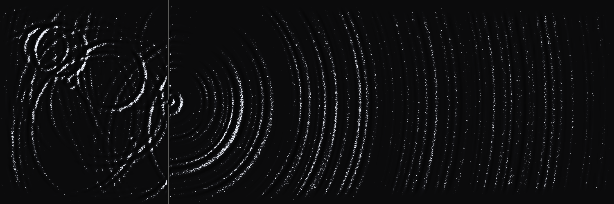

One slit
Wave equation / visual study

Preparing the wave field…
The complete render
FINALuₜₜ = c²∇²u
A numerical wave field passes through a six-cell aperture. The height gradient drives raking light, cast shadows and a fixed grain threshold.